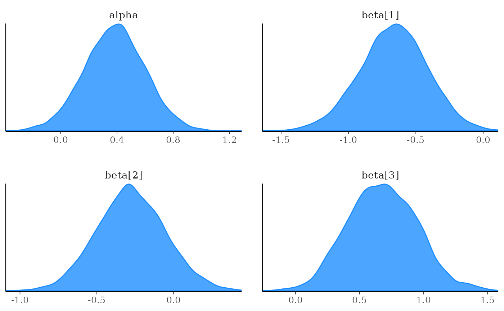
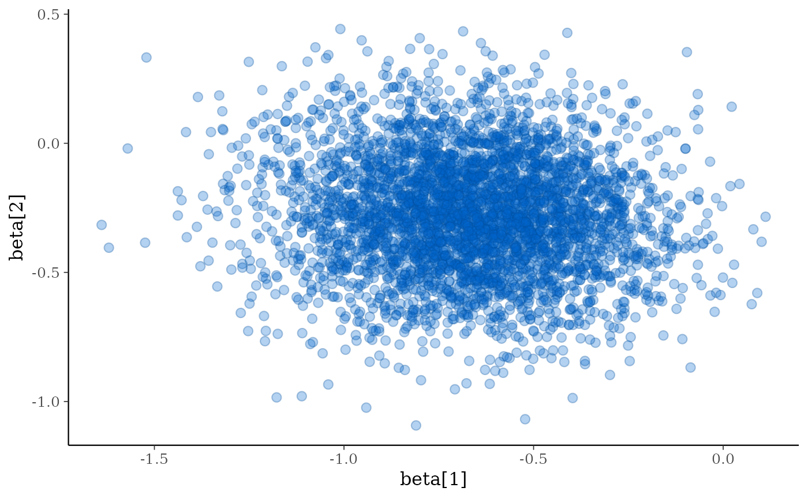

Extract posterior draws after MCMC or approximate posterior draws after variational approximation using formats provided by the posterior package.
The variables include the parameters, transformed parameters, and
generated quantities from the Stan program as well as lp__, the total
log probability (target) accumulated in the model block.
Usage
draws(
variables = NULL,
inc_warmup = FALSE,
format = getOption("cmdstanr_draws_format")
)Arguments
- variables
(character vector) Optionally, the names of the variables (parameters, transformed parameters, and generated quantities) to read in.
If
NULL(the default) then all variables are included.If an empty string (
variables="") then none are included.For non-scalar variables all elements or specific elements can be selected:
variables = "theta"selects all elements oftheta;variables = c("theta[1]", "theta[3]")selects only the 1st and 3rd elements.
- inc_warmup
(logical) Should warmup draws be included? Defaults to
FALSE. Ignored except when used with CmdStanMCMC objects.- format
(string) The format of the returned draws or point estimates. Must be a valid format from the posterior package. The defaults are the following.
For sampling and generated quantities the default is
"draws_array". This format keeps the chains separate. To combine the chains use any of the other formats (e.g."draws_matrix").For point estimates from optimization and approximate draws from variational inference the default is
"draws_matrix".
To use a different format it can be specified as the full name of the format from the posterior package (e.g.
format = "draws_df") or omitting the"draws_"prefix (e.g.format = "df").Changing the default format: To change the default format for an entire R session use
options(cmdstanr_draws_format = format), whereformatis the name (in quotes) of a valid format from the posterior package. For exampleoptions(cmdstanr_draws_format = "draws_df")will change the default to a data frame.Note about efficiency: For models with a large number of parameters (20k+) we recommend using the
"draws_list"format, which is the most efficient and RAM friendly when combining draws from multiple chains. If speed or memory is not a constraint we recommend selecting the format that most suits the coding style of the post processing phase.
Value
Depends on the value of format. The defaults are:
For MCMC, a 3-D
draws_arrayobject (iteration x chain x variable).For standalone generated quantities, a 3-D
draws_arrayobject (iteration x chain x variable).For variational inference, a 2-D
draws_matrixobject (draw x variable) because there are no chains. An additional variablelp_approx__is also included, which is the log density of the variational approximation to the posterior evaluated at each of the draws.For optimization, a 1-row
draws_matrixwith one column per variable. These are not actually draws, just point estimates stored in thedraws_matrixformat. See$mle()to extract them as a numeric vector.
Examples
# \dontrun{
# logistic regression with intercept alpha and coefficients beta
fit <- cmdstanr_example("logistic", method = "sample")
# returned as 3-D array (see ?posterior::draws_array)
draws <- fit$draws()
dim(draws)
#> [1] 1000 4 105
str(draws)
#> 'draws_array' num [1:1000, 1:4, 1:105] -70.3 -68.4 -69.8 -65 -64.3 ...
#> - attr(*, "dimnames")=List of 3
#> ..$ iteration: chr [1:1000] "1" "2" "3" "4" ...
#> ..$ chain : chr [1:4] "1" "2" "3" "4"
#> ..$ variable : chr [1:105] "lp__" "alpha" "beta[1]" "beta[2]" ...
# can easily convert to other formats (data frame, matrix, list)
# using the posterior package
head(posterior::as_draws_matrix(draws))
#> # A draws_matrix: 6 iterations, 1 chains, and 105 variables
#> variable
#> draw lp__ alpha beta[1] beta[2] beta[3] log_lik[1] log_lik[2] log_lik[3]
#> 1 -70 0.095 -0.89 -0.654 1.52 -0.71 -0.11 -0.72
#> 2 -68 0.357 -0.99 -0.583 1.40 -0.56 -0.16 -0.52
#> 3 -70 0.201 -0.15 0.251 0.52 -0.58 -0.38 -0.30
#> 4 -65 0.246 -0.79 -0.028 0.76 -0.53 -0.26 -0.30
#> 5 -64 0.205 -0.59 -0.237 0.55 -0.58 -0.39 -0.54
#> 6 -64 0.535 -0.51 -0.254 0.66 -0.46 -0.47 -0.43
#> # ... with 97 more variables
# or can specify 'format' argument to avoid manual conversion
# matrix format combines all chains
draws <- fit$draws(format = "matrix")
head(draws)
#> # A draws_matrix: 6 iterations, 1 chains, and 105 variables
#> variable
#> draw lp__ alpha beta[1] beta[2] beta[3] log_lik[1] log_lik[2] log_lik[3]
#> 1 -70 0.095 -0.89 -0.654 1.52 -0.71 -0.11 -0.72
#> 2 -68 0.357 -0.99 -0.583 1.40 -0.56 -0.16 -0.52
#> 3 -70 0.201 -0.15 0.251 0.52 -0.58 -0.38 -0.30
#> 4 -65 0.246 -0.79 -0.028 0.76 -0.53 -0.26 -0.30
#> 5 -64 0.205 -0.59 -0.237 0.55 -0.58 -0.39 -0.54
#> 6 -64 0.535 -0.51 -0.254 0.66 -0.46 -0.47 -0.43
#> # ... with 97 more variables
# can select specific parameters
fit$draws("alpha")
#> # A draws_array: 1000 iterations, 4 chains, and 1 variables
#> , , variable = alpha
#>
#> chain
#> iteration 1 2 3 4
#> 1 0.095 0.28 0.4579 0.43
#> 2 0.357 0.30 0.4601 0.51
#> 3 0.201 0.71 0.3105 0.42
#> 4 0.246 0.31 0.0019 0.47
#> 5 0.205 0.15 0.5531 0.26
#>
#> # ... with 995 more iterations
fit$draws("beta") # selects entire vector beta
#> # A draws_array: 1000 iterations, 4 chains, and 3 variables
#> , , variable = beta[1]
#>
#> chain
#> iteration 1 2 3 4
#> 1 -0.89 -0.66 -0.58 -0.54
#> 2 -0.99 -0.76 -0.49 -0.84
#> 3 -0.15 -0.93 -0.63 -1.06
#> 4 -0.79 -0.96 -0.43 -0.81
#> 5 -0.59 -0.69 -0.97 -0.63
#>
#> , , variable = beta[2]
#>
#> chain
#> iteration 1 2 3 4
#> 1 -0.654 -0.2187 -0.4122 0.044
#> 2 -0.583 0.0003 -0.0011 -0.314
#> 3 0.251 -0.3054 0.0416 -0.089
#> 4 -0.028 -0.6455 -0.2830 -0.041
#> 5 -0.237 0.0498 -0.2858 -0.621
#>
#> , , variable = beta[3]
#>
#> chain
#> iteration 1 2 3 4
#> 1 1.52 0.27 0.43 0.60
#> 2 1.40 1.08 0.50 0.47
#> 3 0.52 0.42 0.76 0.58
#> 4 0.76 0.52 0.55 0.85
#> 5 0.55 0.43 0.81 0.69
#>
#> # ... with 995 more iterations
fit$draws(c("alpha", "beta[2]"))
#> # A draws_array: 1000 iterations, 4 chains, and 2 variables
#> , , variable = alpha
#>
#> chain
#> iteration 1 2 3 4
#> 1 0.095 0.28 0.4579 0.43
#> 2 0.357 0.30 0.4601 0.51
#> 3 0.201 0.71 0.3105 0.42
#> 4 0.246 0.31 0.0019 0.47
#> 5 0.205 0.15 0.5531 0.26
#>
#> , , variable = beta[2]
#>
#> chain
#> iteration 1 2 3 4
#> 1 -0.654 -0.2187 -0.4122 0.044
#> 2 -0.583 0.0003 -0.0011 -0.314
#> 3 0.251 -0.3054 0.0416 -0.089
#> 4 -0.028 -0.6455 -0.2830 -0.041
#> 5 -0.237 0.0498 -0.2858 -0.621
#>
#> # ... with 995 more iterations
# can be passed directly to bayesplot plotting functions
bayesplot::color_scheme_set("brightblue")
bayesplot::mcmc_dens(fit$draws(c("alpha", "beta")))

bayesplot::mcmc_scatter(fit$draws(c("beta[1]", "beta[2]")), alpha = 0.3)

# example using variational inference
fit <- cmdstanr_example("logistic", method = "variational")
head(fit$draws("beta")) # a matrix by default
#> # A draws_matrix: 6 iterations, 1 chains, and 3 variables
#> variable
#> draw beta[1] beta[2] beta[3]
#> 1 -0.68 -0.28 0.74
#> 2 -0.24 -0.29 0.72
#> 3 -0.66 -0.58 0.69
#> 4 -0.64 -0.37 0.70
#> 5 -0.56 -0.13 0.60
#> 6 -0.81 -0.34 1.02
head(fit$draws("beta", format = "df"))
#> # A draws_df: 6 iterations, 1 chains, and 3 variables
#> beta[1] beta[2] beta[3]
#> 1 -0.68 -0.28 0.74
#> 2 -0.24 -0.29 0.72
#> 3 -0.66 -0.58 0.69
#> 4 -0.64 -0.37 0.70
#> 5 -0.56 -0.13 0.60
#> 6 -0.81 -0.34 1.02
#> # ... hidden reserved variables {'.chain', '.iteration', '.draw'}
# }